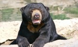
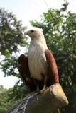
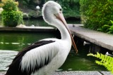

Wisata Jakarta

Deskripsi Ragunan
Kebun Binatang Ragunan adalah kebun binatang pertama di Indonesia. Kebun binatang ini didirikan pada tahun 1864 dengan nama Planten En Dierentuin yang berarti "Tanaman dan Kebun Binatang." Terletak pada tanah seluas 10 hektare di kawasan Cikini, Menteng, Jakarta Pusat yang merupakan pemberian Raden Saleh. Gubernur DKI Jakarta Ali Sadikin meresmikan Taman Margasatwa Ragunan pada 22 Juni 1966.
Lokasi Ragunan
Anak - anak :
Rp 3.000
Dewasa :
Rp 4.000
Selasa - Minggu
06.00 - 16.00 WIB
Lokasi Toilet
Lokasi Tempat Ibadah


Koleksi Kebun Binatang Ragunan
Kebun binatang seluas 140 hektare ini didirikan pada tahun 1864. Di dalamnya, terdapat berbagai koleksi yang terdiri dari 295 spesies dan 4040 spesimen.
Harimau

Harimau sumatera (Panthera tigris sumatrae) adalah subspesies harimau yang habitat aslinya di pulau Sumatera. memiliki ciri kulit loreng coklat kekuning-kuningan dengan garis-garis hitam vertikal dari kepala sampai ekor. Tinggi dapat mencapai 60 cm, dengan panjang 250 cm. Merupakan sub spesies Harimau terakhir yang ada di Indonesia.
Beruang Madu
Beruang madu (Helarctos malayanus) memiliki seluruh tubuh berwarna hitam mengkilap, ekor sangat pendek, moncong abu-abu. Dada atas ada bercak putih kekuningan membentuk huruf “V” atau “C”. Berat tubuh dapat mencapai 60 kg.
Orang Utan

Orangutan adalah sejenis kera besar dengan lengan panjang dan berbulu kemerahan atau cokelat, yang hidup di hutan tropika Indonesia dan Malaysia, khususnya di Pulau Kalimantan dan Sumatera. Orangutan memiliki tubuh yang gemuk dan besar, berleher besar, lengan yang panjang dan kuat, kaki yang pendek dan tertunduk, dan tidak mempunyai ekor.
Singa

Singa (Panthera leo) adalah spesies hewan dari keluarga felidae atau jenis kucing. Singa merupakan hewan yang hidup berkelompok. Biasanya terdiri dari seekor jantan dan banyak betina. Kelompok ini menjaga daerah kekuasaannya.
Monyet Kokah

Monyet Kokah (Presbytis siamensis) adalah spesies primata dalam keluarga Cercopithecidae. Mereka tersebar di Thailand-Semenanjung Malaya, Kepulauan Riau dan Sumatra. Empat subspesies, siamensis (mencalonkan), Kana, paenulata dan rhionis, diakui di sini, tapi taxonomyis sengketa dan membutuhkan tinjauan, dan sudah termasuk P. natunae sebagai subspesies, atau alternatif keduanya telah dianggap subspesies dari P. femoralis.
Anoa

Anoa adalah hewan endemik Sulawesi, sekaligus maskot provinsi Sulawesi Tenggara. Anoa biasa disebut sapihutan adalah subgenus dari Bubalus terdiri dari dua spesies asli Indonesia. Mereka hidup di hutan hujan, semak, dan rawa.
Simpanse

Simpanse (Pan troglodytes) adalah anggota dari keluarga Hominidae, bersama dengan gorila, manusia, dan orangutan. Simpanse terpisah dengan manusia dalam ranting keluarga sekitar 4 – 6 juta tahun lalu. Dua spesies simpanse di atas adalah kerabat terdekat manusia, semuanya anggota dari suku Hominini (berikut dengan spesies yang punah dari sub-suku Hominina). Simpanse satu-satunya anggota yang diketahui dari sub-suku Panina. Kedua spesies Pan tersebut terpisah sekitar 1 juta tahun lalu.
Gajah Sumatera

Gajah sumatera adalah subspesies dari gajah asia yang hanya berhabitat di pulau Sumatera. Gajah sumatera berpostur lebih kecil daripada subspesies gajah india. Populasinya semakin menurun dan menjadi spesies yang sangat terancam.
Macan Tutul

Macan tutul (Panthera pardus) adalah salah satu dari lima kucing besar dalam genus Panthera. Ini adalah anggota dari keluarga Felidae dengan berbagai di beberapa bagian sub-Sahara Afrika, Asia Barat, Timur Tengah, Asia Selatan dan Asia Tenggara ke Siberia.
Burung Elang Bondol
Elang bondol atau dalam nama ilmiahnya adalah Haliastur Indus adalah spesies dari genus dari Haliastur. Burung Elang Bondol berukuran sedang (45 cm), berwarna putih dan coklat pirang. Elang bondol yang remaja berkarakter seluruh tubuh kecoklatan dengan coretan pada dada. Warna berubah putih keabu-abuan pada tahun kedua, dan mencapai bulu dewasa sepenuhnya pada tahun ketiga. Ujung ekor bundar. Iris coklat, paruh dan sera abu-abu kehijauan, kaki dan tungkai kuning suram.
Burung Pelikan
Burung undan atau pelikan adalah burung air yang memiliki kantung di bawah paruhnya, dan merupakan bagian dari keluarga burung Pelecanidae. Bersama burung pecuk, pecuk ular, gannet, angsa batu, dan cikalang, mereka membentuk ordo Pelecaniformes. Pelikan modern ditemukan di semua benua kecuali Antartika. Mereka hidup umumnya di wilayah hangat, dan mereka tidak dijumpai di wilayah kutub, laut dalam, kepulauan samudra, dan benua Amerika Selatan.
Burung Flamingo

Flamingo adalah spesies burung berkaki jenjang yang hidup berkelompok. Mereka berasal dari genus Phoenicopterus dan familia Phoenicopteridae. Burung ini ditemukan di belahan bumi barat dan timur, namun lebih banyak terdapat di belahan timur. Terdapat 4 spesies flamingo di Amerika dan 2 jenis flamingo di Dunia Lama.
Burung Merak Biru

Merak biru (Pavo cristatus) adalah burung besar dan berwarna cerah dari keluarga asli burung dari Asia Selatan, namun diperkenalkan di banyak bagian lain dunia seperti Amerika Serikat, Meksiko, Honduras, Kolombia, Guyana, Suriname, Brazil, Uruguay, Argentina, Afrika Selatan, Madagaskar, Papua, dan Australia.
Komodo

Komodo adalah spesies kadal besar yang ditemukan di pulau-pulau Indonesia Komodo, Rinca, Flores, Gili Motang, dan Padar. Merupakan anggota keluarga biawak (Varanidae), dan spesies kadal terbesar yang masih hidup, panjang maksimalnya dalap mencapai 3 meter (10 kaki) dan beratnya bisa mencapai 70 kilogram.
Biawak

Biawak Salvador (Varanus salvator) merupakan salah satu kadal terbesar di Asia Selatan dan Tenggara. Spesies biawak ini banyak ditemukan di Bangladesh, Sri Lanka and India, Semenanjung Malaya, dan berbagai pulau di Indonesia. Habitat biawak ini tinggal di daerah dekat dengan air
Pusat Primata Schmutzer
Pusat Primata Schmutzer adalah salah satu pusat primata berkelas internasional yang mempunyai peranan dalam konservasi primata Indonesia dan sekaligus sebagai Jendela Informasi Primata.
Berbagai jenis primata Indonesia terwakili di sini dengan beberapa primata eksotisnya antara lain: orangutan, gorilla, simpanse, dan jenis-jenis primata langka dari dalam dan luar negeri lainnya. Kompleks seluas 13 ha dirancang dengan konsep open zoo dimana satwa yang tinggal di dalamnya seolah-olah berada di habitat aslinya.
Selasa - Jum'at
Rp 6.000
Sabtu - Minggu (Hari Libur)
Rp 7.500